Uniones celulares, epitelios, tejido conectivo, muscular y nervioso
Como la clase pasada: ninguna tiene todavía respuesta correcta y no hace falta haber leído el capítulo para opinar. Piensa un momento, coméntala con quien tengas al lado y quédate con tu respuesta. Al final de la segunda sesión volveremos sobre las cuatro.
La córnea y la esclera están hechas casi de lo mismo: agua, colágeno y unas pocas células. Una es transparente y la otra es blanca y opaca. Si el material es el mismo, ¿qué puede estar marcando la diferencia?
Un raspón superficial de córnea se borra en dos días sin dejar rastro. Si el corte llega más hondo, queda una mancha blanca para siempre. ¿Por qué el mismo tejido a veces se repara sin huella y a veces no?
Mueves los ojos cuando quieres: es voluntario e inmediato. Pero el músculo que enfoca de lejos a cerca trabaja solo, y no puedes ordenarle nada. ¿Cómo puede el mismo cuerpo tener dos clases de músculo tan distintas?
Casi todo tu cuerpo está atravesado por vasos sanguíneos. La córnea —de las estructuras más expuestas que tienes— no tiene ni uno solo. ¿Cómo se alimenta entonces, y por qué le conviene no tenerlos?
Las cuatro se responden con lo mismo que veremos hoy: un tejido no es un montón de células, es un patrón de organización. Cómo se unen entre sí, cuánta matriz ponen alrededor y cómo la ordenan explica por qué la córnea es transparente, por qué unas heridas cicatrizan y otras no, y por qué un músculo obedece y el otro no.
Un tejido es un grupo de células similares, en general con un origen embriológico semejante, que se especializa en una función específica. Las tres partes importan: no basta con que las células se parezcan ni con que estén juntas —tienen que compartir origen y oficio—.
La clase pasada terminamos viendo que un mismo plano celular da lugar a unos doscientos tipos de célula distintos. Hoy damos el paso siguiente: esas células no trabajan sueltas. Se asocian, fabrican material a su alrededor y se organizan. La histología es la ciencia que estudia esos tejidos; el anatomopatólogo es el médico que los examina para buscar enfermedad.
Todo el cuerpo humano —cada órgano, cada estructura— está construido con combinaciones de solo cuatro tejidos. Merece la pena detenerse en lo económico que resulta:
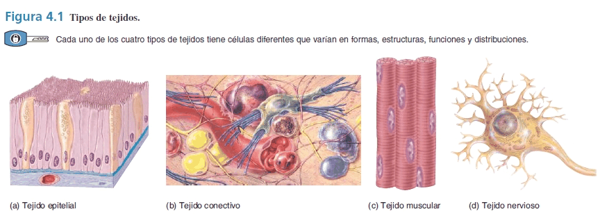
Figura 4.1 · Los cuatro tipos de tejido. Fíjate en el criterio que separa a los dos primeros: en el epitelial las células están pegadas unas a otras; en el conectivo lo que domina es el material que hay entre ellas. Esa sola diferencia explica casi todo lo demás.
| Tejido | Qué hace | Rasgo que lo delata | En el ojo |
|---|---|---|---|
| Epitelial | Cubre, reviste y secreta | Muchas células muy juntas, casi sin material entre ellas. Siempre tiene una superficie libre. Avascular | Epitelio y endotelio corneales, conjuntiva, epitelio del cristalino, epitelio pigmentario de la retina |
| Conectivo | Sostiene, une, protege y almacena | Pocas células y mucha matriz extracelular. Casi siempre vascularizado | Estroma corneal, esclera, coroides, tejido orbitario, sangre |
| Muscular | Genera fuerza y movimiento | Células alargadas capaces de contraerse | Músculos extraoculares, músculo ciliar, esfínter y dilatador del iris |
| Nervioso | Detecta, integra y transmite | Neuronas que conducen señales eléctricas, con neuroglía de soporte | Retina y nervio óptico |
La córnea tiene cinco capas y en ellas aparecen dos de los cuatro tejidos: epitelial en la superficie y en el fondo, conectivo en medio. Ni músculo ni nervio —salvo las terminaciones nerviosas libres que la hacen la superficie más inervada del cuerpo—. Míralo en un corte real antes de seguir:
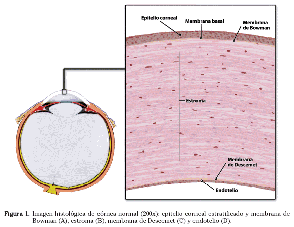
Córnea normal, 200×. Arriba, el epitelio corneal —tejido epitelial, varias capas— apoyado en su membrana basal y sobre la membrana de Bowman. En el centro, el estroma, que ocupa casi todo el espesor: tejido conectivo, con muy pocas células —esos núcleos sueltos son los queratocitos— y muchísima matriz ordenada en láminas. Abajo, la membrana de Descemet y el endotelio, una sola capa de células planas: tejido epitelial otra vez.
Fíjate en la proporción: en el epitelio y el endotelio se ven células; en el estroma se ve material. Es el contraste de la tabla de arriba, en una sola imagen y en una sola estructura de dos décimas de milímetro. Volveremos a ella al cerrar la sesión 2: casi todo lo que verás en la consulta se explica con estas cuatro palabras.
Si las células de un epitelio solo estuvieran apoyadas unas contra otras, el primer roce las separaría y el contenido del estómago se filtraría hacia la sangre. No ocurre porque hay uniones celulares: puntos de contacto entre las membranas plasmáticas de células adyacentes. Son cinco, y cada una resuelve un problema distinto.
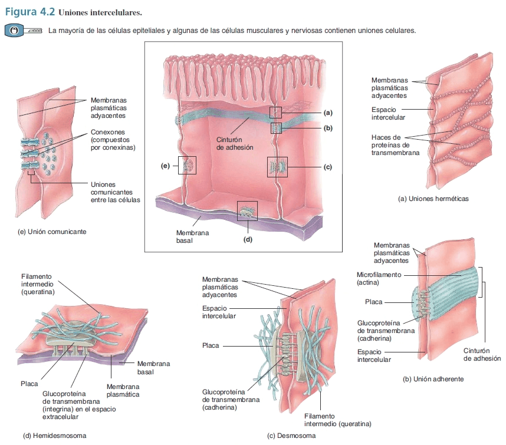
Figura 4.2 · Las cinco uniones intercelulares. Las cuatro primeras unen una célula con otra; el hemidesmosoma es el único que une la célula con la membrana basal, es decir, con el tejido conectivo de debajo. Observa las proteínas: cadherinas en las que pegan células entre sí, integrinas en la que ancla al suelo, conexinas en la única que comunica.
| Unión | Proteína clave | Qué consigue | Dónde importa en el ojo |
|---|---|---|---|
| Hermética zona de oclusión |
Ocludinas y claudinas | Fusiona las membranas vecinas y sella: nada pasa por el espacio entre células, todo debe atravesarlas | Epitelio pigmentario de la retina y endotelio de los capilares retinianos: son la barrera hematorretiniana |
| Adherente | Cadherinas + placa + actina | Forma un cinturón de adhesión alrededor de la célula; resiste la separación durante el movimiento | Epitelio corneal, sometido al roce del parpadeo unas 15 000 veces al día |
| Desmosoma | Cadherinas + placa + queratina | Remache puntual. Los filamentos de queratina lo atraviesan y unen todo el epitelio en una red continua | Capas del epitelio corneal y de la epidermis; su fallo autoinmune causa el pénfigo |
| Comunicante gap junction |
Conexinas, que forman conexones | Túneles que dejan pasar iones y moléculas pequeñas: las células se comunican y se sincronizan | Fibras del cristalino: sin vasos ni organelos, sobreviven conectadas entre sí |
| Hemidesmosoma | Integrinas | Medio desmosoma: no une dos células, ancla la célula basal a la membrana basal | Une el epitelio corneal a su membrana basal; si falla, la erosión corneal recidivante |
El ojo es nuestro hilo conductor, pero estas uniones están en todas partes y en varios sitios explican una enfermedad conocida. Abre la que quieras:
Donde haga falta separar dos compartimentos, hay uniones herméticas. Son literalmente lo que define una «barrera» fisiológica.
La lógica es siempre la misma: si nada puede colarse entre las células, todo tiene que atravesarlas — y ahí la célula controla el paso.
Regla práctica: donde un epitelio se estira o se dobla de forma repetida, espera encontrar cinturones de adhesión.
El pénfigo vulgar es una enfermedad autoinmune en la que el propio sistema inmune fabrica anticuerpos contra la desmogleína, la cadherina del desmosoma. Sin ese remache, las células de la epidermis se despegan entre sí y se forman ampollas dolorosas en piel y mucosas. Es la demostración clínica de para qué sirve un desmosoma: se ve lo que pasa cuando falta.
Es la más interesante de las cinco, porque no sujeta: comunica. Los conexones dejan pasar iones y moléculas de menos de 1 000 dalton, así que un grupo de células conectadas se comporta casi como una sola.
Fíjate en el patrón: aparecen siempre que un grupo de células tiene que actuar de forma sincronizada o alimentar a células aisladas del torrente sanguíneo.
Está en todo epitelio, porque todo epitelio se apoya en una membrana basal y necesita anclarse a ella. El caso más estudiado es la piel:
El penfigoide ampolloso es la contraparte del pénfigo: aquí los anticuerpos atacan antígenos del hemidesmosoma, no del desmosoma. El resultado es distinto y sirve para distinguirlos — como lo que falla es el anclaje al suelo y no la unión entre células, la ampolla se forma debajo de toda la epidermis y es más tensa. En la córnea, el equivalente es la erosión recidivante.
Las fibras del cristalino pierden núcleo y organelos para ser transparentes, y el cristalino no tiene un solo vaso. ¿Cómo sobreviven las del centro? Porque están unidas por uniones comunicantes —conexinas 46 y 50— que forman un circuito de circulación interna: nutrientes y antioxidantes viajan de célula a célula hasta el núcleo del cristalino. Las mutaciones de esas conexinas producen cataratas congénitas, y el deterioro del circuito con la edad es uno de los mecanismos de la catarata senil.
Antes de entrar en el detalle conviene fijar el contraste, porque casi todo lo demás se deduce de él. Epitelio y conectivo resuelven el mismo problema —cómo organizar células en un tejido— con decisiones contrarias.
Muchas células, poca matriz. Las células están estrechamente unidas por uniones celulares, con muy poco material extracelular entre ellas. Siempre hay una superficie libre (apical) y una membrana basal que lo separa del conectivo. Es avascular: no tiene vasos, se nutre por difusión desde el conectivo de debajo. Sí tiene inervación. Se divide rápido, así que se renueva bien.
Pocas células, mucha matriz. Lo que define al tejido no son las células sino el material que fabrican a su alrededor. No suele tener superficie libre. Está muy vascularizado —salvo el cartílago, los tendones y los ligamentos— y tiene inervación, salvo el cartílago.
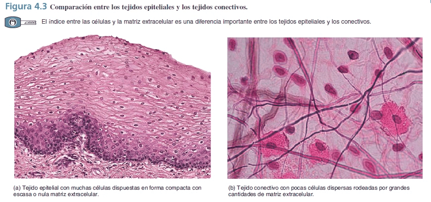
Figura 4.3 · Epitelial contra conectivo. Es la imagen que resume la sección: arriba, células apretadas sin apenas nada entre ellas y sin un solo vaso; abajo, pocas células perdidas en un mar de matriz, atravesada por vasos. Observa también la membrana basal que los separa: es la frontera entre los dos.
De ese contraste sale una consecuencia que usarás toda la carrera: como el epitelio no tiene vasos, depende por completo del conectivo que tiene debajo. Y como el conectivo se define por su matriz, cambiar la matriz cambia el tejido. La diferencia entre un tendón, un cartílago, un hueso y la sangre no está en sus células: está en lo que esas células segregaron alrededor.
Ya podemos responder la primera pregunta del inicio. Córnea y esclera son las dos tejido conectivo con colágeno tipo I; la diferencia está en cómo está ordenada la matriz. En el estroma corneal las fibrillas son finas, de diámetro uniforme y dispuestas en láminas paralelas regularmente espaciadas: la luz las atraviesa sin dispersarse. En la esclera las fibrillas son gruesas, de diámetro variable y desordenadas: dispersan la luz y se ve blanca. Mismo material, distinto orden. Cuando la córnea se edematiza y ese espaciado se pierde, aparece el halo y la visión borrosa.
Aquí está la única regla que hay que aprender de memoria, y es sencilla. Todo epitelio se nombra con dos criterios: cuántas capas tiene y qué forma tienen las células de la capa superficial. Nada más.
Simple: una sola capa.
Estratificado: varias capas.
Seudoestratificado: parece que tiene varias, pero es una sola —todas
las células tocan la membrana basal, aunque no todas llegan a la superficie—.
Pavimentoso: aplanado, como una baldosa.
Cúbico: tan alto como ancho.
Cilíndrico: más alto que ancho.
De transición: cambia de forma según se distienda.
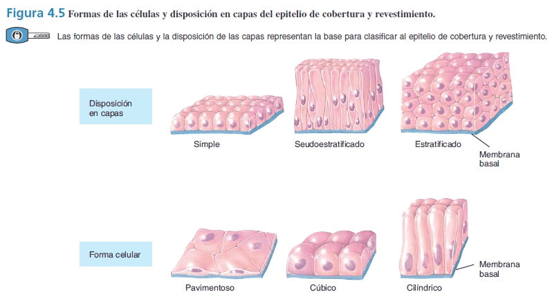
Figura 4.5 · Formas y capas. Toda la clasificación del Cuadro 4.1 sale de cruzar estas dos columnas. Fíjate en el seudoestratificado: los núcleos están a distinta altura y parecen varias capas, pero todas las células tocan la membrana basal.
Los dos apellidos no son etiquetas arbitrarias: cada uno predice una función. Si entiendes esto, no tienes que memorizar el cuadro — lo deduces.
Simple · una sola capa. Una sustancia que entre solo tiene que atravesar una célula. Es lo más barato posible en distancia, así que aparece donde lo que importa es el paso de sustancias: difusión, filtración, absorción y secreción. El precio es que no protege: una capa se rompe con facilidad.
Seudoestratificado · una capa que aparenta varias. Todas las células tocan la membrana basal, pero solo algunas llegan a la superficie. Es la solución de las vías respiratorias: unas células secretan moco y otras lo empujan con cilios, todas en una sola capa.
Estratificado · varias capas. Las células de arriba se desgastan y se desprenden, y se reponen desde las basales, que son las que se dividen. Aparece donde hay roce, presión o desecación. El precio es el inverso: con varias capas el intercambio se vuelve inviable.
La forma indica cuánto citoplasma y cuántos organelos cabe dentro, y eso determina cuánto trabajo puede hacer la célula.
Pavimentosa · aplanada. Casi no tiene altura, así que la distancia que debe recorrer una sustancia es mínima: difusión y filtración. El alvéolo y el capilar están hechos de esto. En un epitelio estratificado, en cambio, esa misma forma plana sirve de baldosa protectora.
Cúbica · tan alta como ancha. Ya hay sitio para organelos: secreción y absorción moderadas. Túbulos renales, conductos glandulares, epitelio del cristalino.
Cilíndrica · más alta que ancha. Es la que más maquinaria alberga, así que secreta y absorbe más que la cúbica. Además, al ser alta puede permitirse adornos en la cara apical: microvellosidades para multiplicar la superficie de absorción, o cilios para mover material por encima.
De transición · cambia de forma. No es una forma, es una capacidad: las células pasan de cúbicas a aplanadas según el órgano se llene. Sirve para distenderse sin romperse, y solo se encuentra en las vías urinarias.
Una célula epitelial no es igual por todos lados: está polarizada. Cada cara tiene su especialización, y de eso depende que un epitelio pueda transportar en una sola dirección — que es justo lo que hace útil a un epitelio.
Mira a la superficie libre —a la luz del órgano o al exterior—. Puede llevar microvellosidades para absorber o cilios para mover material.
Mira a las células vecinas. Aquí están las uniones celulares que acabamos de ver: herméticas, adherentes, desmosomas y comunicantes.
Se apoya en la membrana basal mediante hemidesmosomas. Es la cara por la que le llega el alimento desde el conectivo.
El nombre engaña dos veces. No es una membrana plasmática —no es una bicapa lipídica, sino una capa de matriz extracelular—, y no la fabrica solo el epitelio: la construyen entre los dos tejidos que separa. Tiene dos láminas:
La más cercana al epitelio, y secretada por las células epiteliales. Contiene laminina, colágeno tipo IV y proteoglucanos.
La más profunda, secretada por los fibroblastos del tejido conectivo. Contiene fibras reticulares (colágeno tipo III).
Sirve para cuatro cosas, y conviene tenerlas presentes porque volverán:
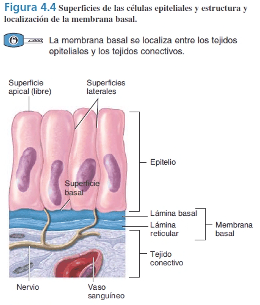
Figura 4.4 · Las tres superficies y la membrana basal. Localiza en el esquema las microvellosidades y los cilios en la cara apical, las uniones en la lateral, y los hemidesmosomas de la basal clavados en la lámina basal.
Y la más gruesa del cuerpo humano: la fabrica el epitelio del cristalino y lo envuelve por completo. Eso explica dos cosas de la consulta. Primero, que en la cirugía de catarata se pueda vaciar el cristalino y dejar la cápsula puesta como bolsa donde alojar la lente intraocular. Segundo, la opacificación de cápsula posterior: si quedan células epiteliales, proliferan sobre esa membrana basal —que es justo su guía natural de migración— y la visión vuelve a nublarse meses después. Se resuelve con capsulotomía YAG. La membrana de Descemet de la córnea es también una membrana basal, la del endotelio.
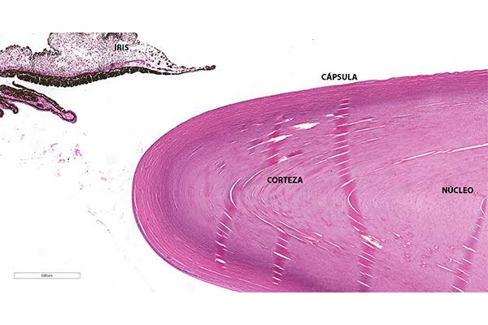
La cápsula, envolviendo el cristalino entero. Esa línea continua del borde es membrana basal: la fabrica el epitelio de dentro y no deja ningún hueco. Dentro se distinguen la corteza, con las fibras más nuevas en capas concéntricas, y el núcleo, con las más antiguas — las que se formaron antes de que nacieras.
Cada ficha trae la lámina del Cuadro 4.1 de Tortora con su microfotografía y su esquema. Léelas con los dos criterios en la mano: capas y forma. Verás que la localización y la función casi siempre se deducen de ahí.
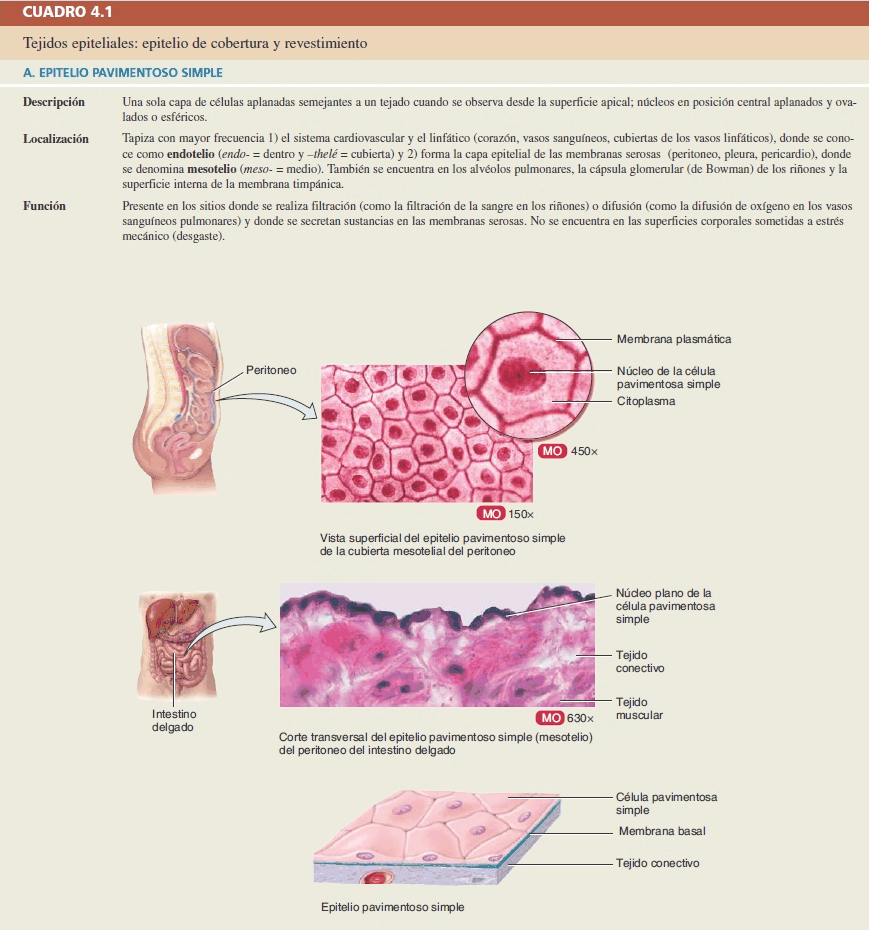
La cara posterior de la córnea está tapizada por una sola capa de células planas: es endotelio, el mismo tipo que reviste los vasos. Su delgadez es funcional — el agua que bombea hacia el humor acuoso tiene que atravesar el mínimo espesor posible.
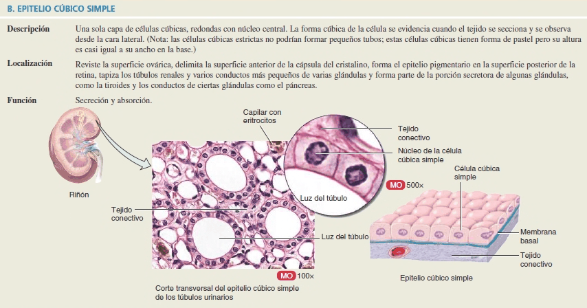
No hay que buscarlos: el propio libro cita el epitelio del cristalino y el epitelio pigmentario de la retina entre las localizaciones del cúbico simple. Del primero salen las fibras nuevas durante toda la vida; el segundo fagocita cada día los segmentos externos gastados de los fotorreceptores. Los dos secretan y absorben, que es exactamente la función que predice la forma cúbica.
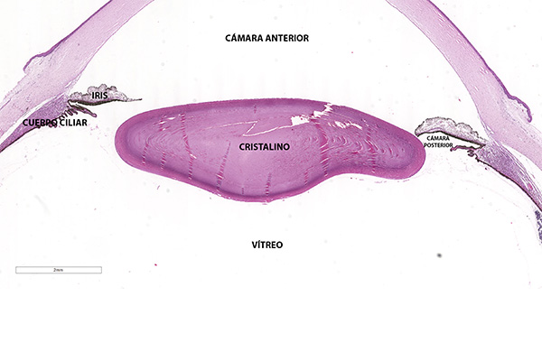
Dónde estamos mirando. El cristalino entero, entre la cámara anterior y el vítreo, sujeto por el cuerpo ciliar y con el iris por delante. El epitelio que nos interesa está solo en su cara anterior.
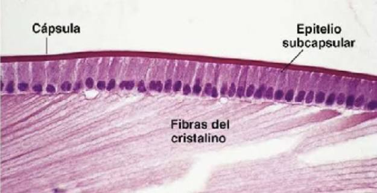
Ahí está el epitelio cúbico simple. De arriba abajo: la cápsula —membrana basal—, una sola fila de células con el núcleo bien visible, y debajo las fibras del cristalino.
Fíjate en un detalle de la segunda imagen: hacia los extremos, las células del epitelio empiezan a alargarse. No es un defecto del corte, es la transición. Esas células cúbicas migran hacia el ecuador del cristalino, se estiran, pierden el núcleo y se convierten en fibras. Estás viendo en una sola imagen cómo un epitelio se transforma en otro tejido.
Y de ahí sale lo demás: como el cristalino nunca descarta nada —las fibras viejas quedan comprimidas en el centro y las nuevas se añaden por fuera—, su núcleo se vuelve cada año más denso. Ese endurecimiento progresivo es la presbicia; su pérdida de transparencia, la catarata. Las dos son consecuencia de cómo trabaja este epitelio cúbico simple.
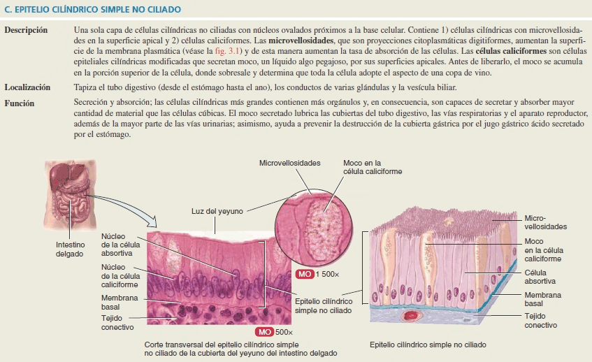
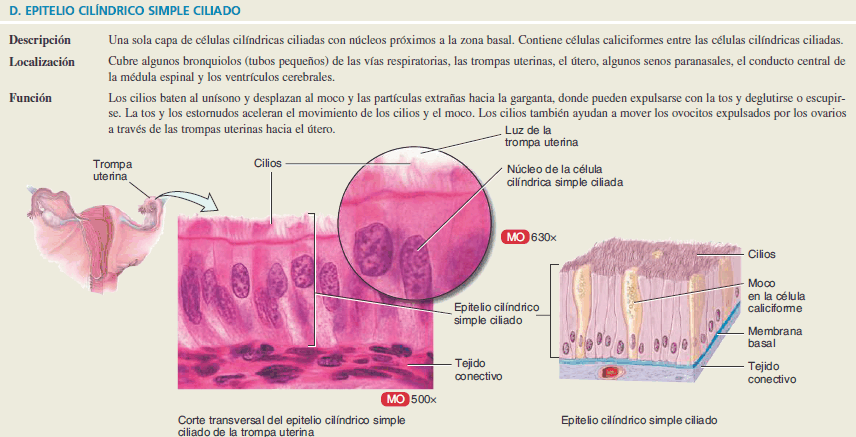
Cuadro 4.1 D · Cilíndrico simple ciliado de trompa uterina. Compárala con la lámina anterior: la única diferencia visible es la franja de cilios sobre la superficie apical. Los núcleos siguen estando en la base y la capa sigue siendo una sola.
Y fíjate en el reparto del trabajo, porque se repite en todo el aparato respiratorio y reproductor: unas células fabrican el moco y otras lo mueven. Las caliciformes secretan, los cilios barren. Cuando falla una de las dos —el humo del tabaco paraliza los cilios, la fibrosis quística espesa el moco— el sistema entero deja de funcionar aunque la otra mitad esté intacta.
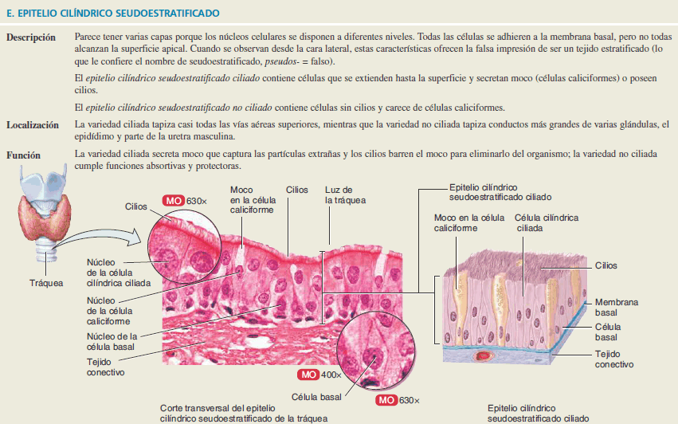
Cuadro 4.1 E · Seudoestratificado ciliado de tráquea. Los tres núcleos que rotula el esquema están a tres alturas distintas —célula ciliada, caliciforme y basal— y de ahí viene la falsa impresión de estratificación. Sigue la línea de la membrana basal: todas la tocan.
La lámina enseña además quiénes son las células que no llegan arriba: las células basales. No son un relleno — son la reserva desde la que el epitelio se renueva, igual que las basales de un estratificado. Un epitelio simple que resuelve con una sola capa lo que otros resuelven apilando: secretar, transportar y tener recambio a la vez.
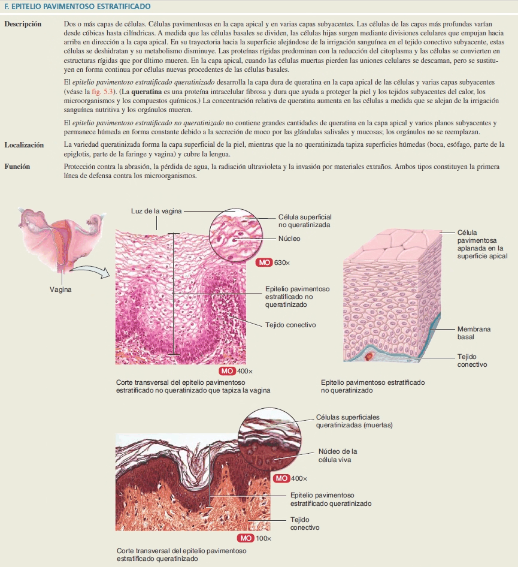
Queratinizarse significa que las células apicales mueren y se llenan de queratina: quedan opacas, secas y duras. Eso es justo lo que le conviene a la piel y lo que arruinaría a la córnea, que necesita células vivas, hidratadas y ópticamente homogéneas. En el ojo seco grave el epitelio corneal empieza a queratinizarse —el tejido responde al ambiente seco como si fuera piel— y la superficie se opacifica.
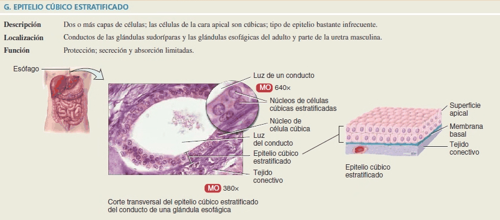
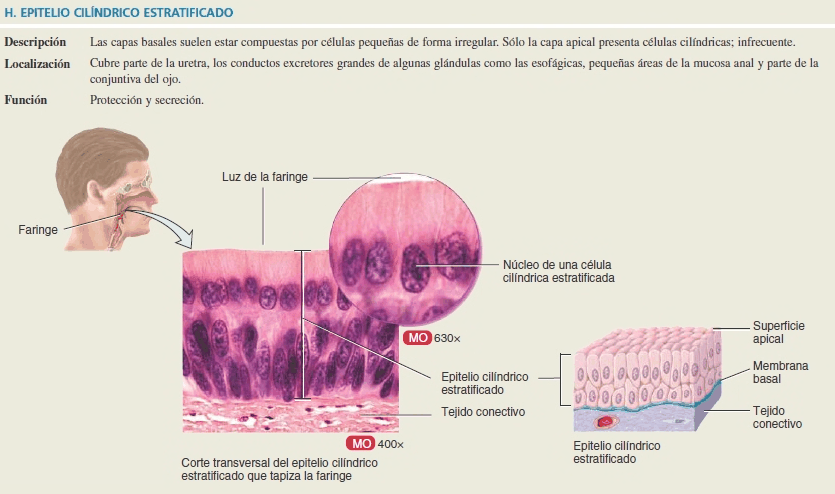
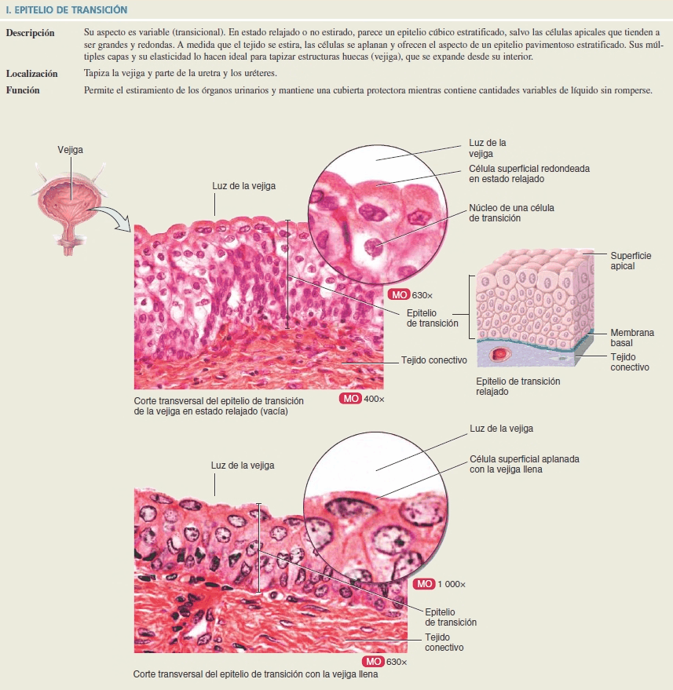
Ahora sí, el cuadro completo para repasar de un vistazo:
| Epitelio | Función principal | Dónde se encuentra |
|---|---|---|
| Pavimentoso simple | Filtración, difusión, secreción en zonas de mucho tránsito | Alvéolos, cápsula de Bowman renal. Recibe dos nombres propios: endotelio si reviste corazón y vasos, mesotelio si forma las serosas |
| Cúbico simple | Secreción y absorción | Túbulos renales, superficie del ovario, conductos glandulares, epitelio del cristalino |
| Cilíndrico simple no ciliado | Secreción y absorción | Casi todo el tubo digestivo. Tiene células caliciformes, que secretan moco, y microvellosidades |
| Cilíndrico simple ciliado | Mover moco y partículas | Parte de las vías respiratorias superiores, trompas uterinas |
| Cilíndrico seudoestratificado ciliado | Secreta moco y lo desplaza | Mayor parte de las vías respiratorias superiores; tiene células caliciformes |
| Cilíndrico seudoestratificado no ciliado | Absorción y protección | Epidídimo, conductos de muchas glándulas, parte de la uretra masculina |
| Pavimentoso estratificado no queratinizado | Protección en superficies húmedas | Boca, esófago, vagina — y el epitelio corneal. La conjuntiva también es estratificada, pero cambia de forma según la zona: pavimentosa cerca del limbo y del borde palpebral, cilíndrica en los fondos de saco |
| Pavimentoso estratificado queratinizado | Protección en superficies secas y expuestas | Epidermis de la piel |
| Cúbico estratificado | Protección, algo de secreción | Conductos de glándulas sudoríparas del adulto, parte de la uretra masculina |
| Cilíndrico estratificado | Protección y secreción | Parte de la uretra masculina, conductos excretores grandes |
| De transición (urotelio) | Permite la distensión sin romperse | Vejiga y vías urinarias. Sus células cambian de cúbicas a aplanadas al llenarse |
Una biopsia (bíos = vida, -op = ver) es la extracción de una muestra pequeña de tejido vivo para examinarla al microscopio. Se usa para diagnosticar numerosos trastornos —sobre todo el cáncer— y para averiguar la causa de infecciones e inflamaciones sin explicación.
Un detalle del procedimiento que dice mucho sobre cómo se razona en histología: se extrae tanto tejido presuntamente enfermo como tejido normal, porque el diagnóstico se hace comparando. No existe una imagen de «tejido enfermo» en abstracto: existe una desviación respecto de cómo debería verse ese tejido concreto. Por eso la clase de hoy —saber cómo se ve lo normal— es el requisito para reconocer lo patológico.
La prueba de Papanicolaou consiste en raspar y examinar al microscopio las células de la capa apical de un epitelio. La más conocida estudia el epitelio pavimentoso estratificado no queratinizado de la vagina y el cuello uterino, para detectar cambios precoces que indiquen un estado precanceroso.
Funciona precisamente por lo que vimos en este apartado: en un epitelio estratificado las células apicales se están desprendiendo continuamente, así que se pueden recoger sin dañar nada. Es la citología exfoliativa, y el mismo principio se aplica en el ojo con la citología de impresión conjuntival, que se usa para valorar la pérdida de células caliciformes en el ojo seco.
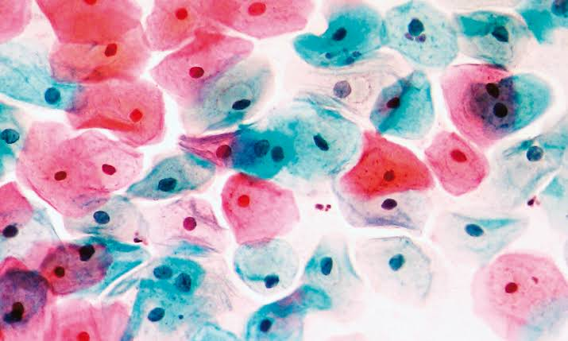
Normal. Células escamosas amplias y planas, cada una con un núcleo diminuto perdido en mucho citoplasma. El color no es decorativo: la tinción distingue las células superficiales, más maduras, de las intermedias. Estás viendo el gradiente de maduración del epitelio, extendido sobre un porta.
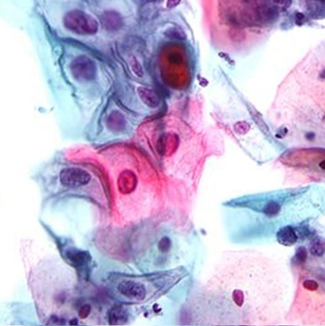
Alterado. Compara solo los núcleos: aquí están agrandados, más oscuros y de contorno irregular, y ocupan una proporción del citoplasma mucho mayor. El citoplasma sigue pareciendo escamoso; lo que cambió es el núcleo. Eso es lo que hace que un citólogo marque la muestra para estudio.
El criterio que separa las dos imágenes tiene nombre: la relación núcleo-citoplasma. En una célula escamosa madura el núcleo es minúsculo porque ya cumplió su papel —se dividió abajo, en la capa basal, y desde entonces solo sube y se aplana—. Cuando una célula que debería estar madurando conserva un núcleo grande y denso, algo interrumpió ese recorrido.
Con la tabla en la mano ya puedes leer un ojo entero:
El otro subtipo de tejido epitelial no cubre nada: secreta. Una glándula es una célula o un grupo de células epiteliales adaptadas para producir y liberar una sustancia. Se clasifican de tres maneras distintas, y conviene no mezclarlas.
Vierten hormonas al líquido intersticial y de ahí a la sangre. No tienen conducto. Hipófisis, tiroides, suprarrenales.
Vierten su producto a un conducto o directamente sobre una superficie libre. Sudoríparas, sebáceas, salivales, digestivas — y la lagrimal.
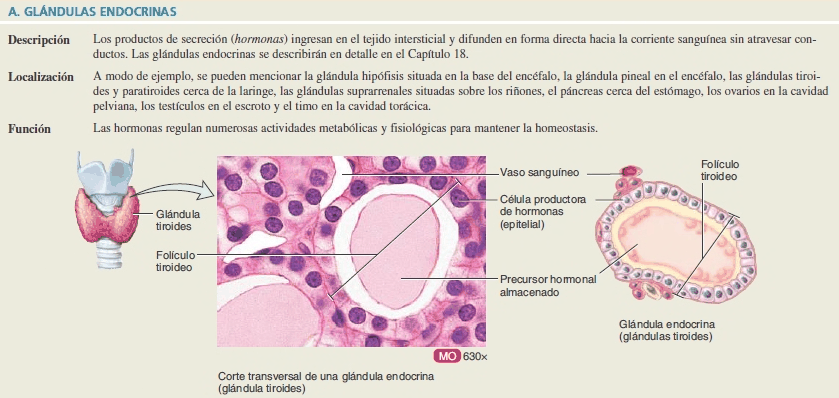
Cuadro 4.2 A · Endocrinas. Hipófisis, pineal, tiroides, paratiroides, suprarrenales, ovarios, testículos y timo. Las hormonas pasan al líquido intersticial y de ahí a la sangre; regulan el metabolismo y sostienen la homeostasis.
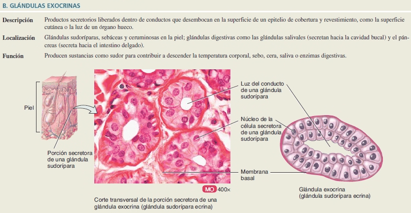
Cuadro 4.2 B · Exocrinas. Sudoríparas, sebáceas y ceruminosas de la piel; salivales y páncreas entre las digestivas. Producen sudor —que baja la temperatura—, sebo, cera, saliva o enzimas.
Esta es la clasificación estructural, y solo se aplica a las exocrinas:
Una sola célula que secreta por su cuenta, sin conducto. El ejemplo es la célula caliciforme, que vierte moco sobre la superficie del epitelio en el que está inserta — como las de la conjuntiva.
Un grupo de células con una porción secretora y un conducto que lleva el producto a su destino. Se subdividen cruzando dos rasgos.
Las multicelulares se nombran, otra vez, con dos criterios cruzados:
Simple: el conducto no se ramifica.
Compuesta: el conducto se ramifica.
Tubular: con forma de tubo.
Acinar (o alveolar): con forma de saco redondeado.
Tubuloacinar: las dos formas a la vez.
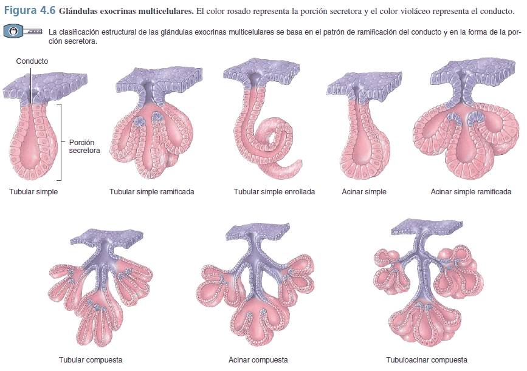
Figura 4.6 · Las glándulas exocrinas multicelulares. Cada dibujo es una combinación de los dos criterios. No hace falta memorizar los ocho: basta con saber leer el nombre y reconstruir la forma.
| Tipo estructural | Dónde encontrarla |
|---|---|
| Tubular simple | Glándulas intestinales |
| Tubular simple ramificada | Glándulas gástricas y uterinas |
| Tubular enrollada simple | Glándulas sudoríparas |
| Acinar simple | Glándulas de la uretra peneana |
| Acinar simple ramificada | Glándulas sebáceas — y por tanto las de Meibomio y las de Zeis del párpado |
| Tubular compuesta | Glándulas bulbouretrales, túbulos seminíferos del testículo, glándulas mucosas de la boca |
| Acinar compuesta | Páncreas exocrino |
| Tubuloacinar compuesta | Glándulas salivales submandibular y sublingual — y la glándula lagrimal |
Esta es la clasificación funcional y la que más se pregunta, porque distingue tres mecanismos con un coste celular muy distinto:
| Tipo | Mecanismo | Qué le pasa a la célula | Ejemplo clásico |
|---|---|---|---|
| Merocrina | Exocitosis: la vesícula se fusiona con la membrana y libera el contenido | Queda intacta. Puede repetir indefinidamente | Glándulas salivales y pancreáticas |
| Apocrina | Se desprende la porción apical del citoplasma cargada de producto | Pierde un trozo y luego se repara | Glándulas mamarias |
| Holocrina | La célula entera se llena de producto, muere y se desintegra: el producto es la célula | Muere. Se repone desde células basales | Glándulas sebáceas |
No hace falta irse al páncreas ni a la mama: el borde del párpado reúne los tres tipos funcionales, y por eso es el mejor sitio del cuerpo para entender esta clasificación.
Repasar la lágrima como producto de tres glándulas distintas —mucina de las caliciformes, agua de la lagrimal, lípido de Meibomio— es repasar toda esta sección.
Grupo de células similares, de origen embriológico semejante, especializadas en una función.
👁 La córnea combina tejido epitelial y conectivo en cinco capas.
Fusión de las membranas de células vecinas que sella el paso de sustancias entre ellas.
👁 Forma la barrera hematorretiniana en el epitelio pigmentario.
Unión en forma de remache con placa y filamentos de queratina que atraviesan la célula.
👁 Mantiene cohesionadas las capas del epitelio corneal frente al parpadeo.
Medio desmosoma con integrinas que ancla la célula epitelial a la membrana basal.
👁 Su fallo causa la erosión corneal recidivante.
Conexones de conexinas que dejan pasar iones y moléculas pequeñas entre células.
👁 Nutre las fibras del cristalino; su fallo produce catarata congénita.
Capa extracelular entre el epitelio y el tejido conectivo; da soporte y filtra.
👁 La cápsula del cristalino es la membrana basal más gruesa del cuerpo.
Varias capas cuya capa apical es aplanada; protege frente al roce. Puede ser queratinizado o no.
👁 El epitelio corneal es la variedad no queratinizada.
Nombre propio del epitelio pavimentoso simple que reviste el corazón y los vasos.
👁 El endotelio corneal mantiene la transparencia bombeando agua hacia el humor acuoso.
Epitelio pavimentoso simple que forma las membranas serosas.
👁 Mismo epitelio que el endotelio, distinto lugar y distinto nombre.
Glándula exocrina unicelular que secreta moco sobre la superficie epitelial.
👁 Las de la conjuntiva producen la mucina de la lágrima.
Secreta por exocitosis y la célula queda intacta.
👁 La glándula lagrimal: produce la capa acuosa sin destruirse.
La célula entera se llena de producto, muere y se desintegra; el producto es la célula.
👁 Las glándulas de Meibomio, que aportan el lípido de la lágrima.
Elige una opción en cada pregunta. La respuesta aparece al pulsar.
1. ¿Qué tipo de unión celular es el único que permite el paso de iones y moléculas pequeñas de una célula a otra?
2. El epitelio de la córnea es pavimentoso estratificado no queratinizado. ¿Qué le aporta el hecho de no estar queratinizado?
3. Las glándulas de Meibomio del párpado son holocrinas. Eso significa que:
4. Un epitelio en el que todas las células tocan la membrana basal, pero no todas alcanzan la superficie libre, y que por eso aparenta tener varias capas, se denomina:
5. Which cell junction anchors the basal epithelial cells of the cornea to the basement membrane, and whose failure leads to recurrent corneal erosion?
¿Qué unión celular ancla las células epiteliales basales de la córnea a la membrana basal, y cuyo fallo conduce a la erosión corneal recidivante?
Es el tejido más abundante y el más variado del cuerpo: bajo el mismo nombre caben la grasa, el cartílago, el hueso, los tendones y la sangre. Que cosas tan distintas sean el mismo tejido deja de ser raro en cuanto se entiende la regla: en el conectivo lo que manda no son las células, sino lo que las células fabrican a su alrededor.
Casi todas derivan de células mesenquimáticas. Conviene reconocer seis:
| Célula | Qué hace |
|---|---|
| Fibroblasto | El más numeroso. Secreta la matriz extracelular: fibras y sustancia fundamental |
| Macrófago | Realiza fagocitosis; deriva de los monocitos |
| Célula plasmática | Secreta anticuerpos; deriva del linfocito B |
| Mastocito | Produce histamina, que dilata los vasos en la inflamación |
| Adipocito | Almacena triglicéridos |
| Leucocito | Migra desde la sangre cuando hay infección |
La sustancia fundamental es el material que ocupa el espacio entre células y fibras. Da soporte, une las células, permite el intercambio de sustancias y almacena agua. Está hecha de agua y glucosaminoglucanos —ácido hialurónico, condroitinsulfato, dermatansulfato, queratansulfato—, más proteoglucanos y proteínas de adhesión.
Dentro de ella hay tres tipos de fibra, y esta distinción sí hay que saberla:
Muy resistentes a la tracción y flexibles. Son las más abundantes del cuerpo. Predominan en hueso, tendones y ligamentos.
De elastina y fibrilina. Se estiran y recuperan la forma. En piel, paredes vasculares y pulmón.
De colágeno y glucoproteínas, finas y ramificadas. Forman redes de sostén alrededor de adipocitos, nervios y fibras musculares.
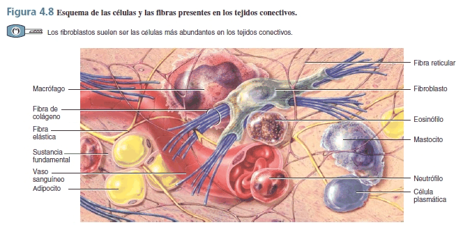
Figura 4.8 · Células y fibras del tejido conectivo. Localiza el fibroblasto: es el más grande y el más numeroso, y todo lo demás que ves alrededor —fibras y sustancia fundamental— lo fabricó él.
El vítreo es un gel de ácido hialurónico con una red laxa de fibrillas de colágeno: exactamente los dos componentes de la matriz extracelular que acabamos de nombrar, con muy pocas células (los hialocitos). Con la edad el hialurónico se despolimeriza, el gel se licúa y el colágeno se agrega en haces visibles — eso son las miodesopsias, las «moscas volantes». Cuando la retracción del gel tira de la retina aparece el desprendimiento de vítreo posterior, y con él el riesgo de desgarro retiniano. Envejecimiento de una matriz extracelular, con consecuencias clínicas directas.
La clasificación tiene dos ramas: el embrionario, presente en el embrión y el feto, y el maduro, el que ya está en el recién nacido. Empecemos por el primero, porque explica de dónde salen todos los demás.
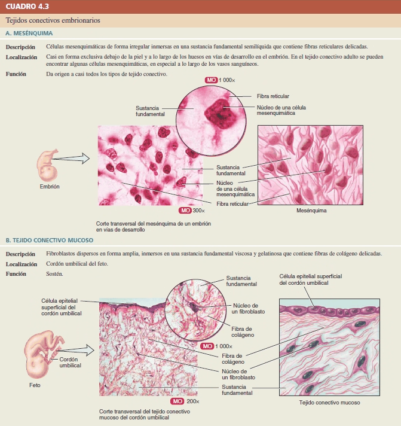
Cuadro 4.3 · Tejidos conectivos embrionarios. Compara la densidad celular con la de cualquier conectivo maduro: aquí todavía hay más célula que matriz. La especialización llegará al fabricar la matriz.
Todo lo que sigue deriva del mesénquima, y lo que los separa es qué matriz fabricaron:
| Tipo | Composición | Dónde está |
|---|---|---|
| Areolar | Los tres tipos de fibra, varios tipos de célula y sustancia fundamental semilíquida. Es el conectivo «de propósito general» | Capa subcutánea, membranas mucosas, alrededor de vasos, nervios y órganos. Bajo la conjuntiva |
| Adiposo | Adipocitos cargados de triglicéridos | Capa subcutánea, alrededor de órganos, médula ósea amarilla. La grasa orbitaria. El adiposo pardo genera calor |
| Reticular | Fibras y células reticulares formando una red | Hígado, bazo y ganglios linfáticos |
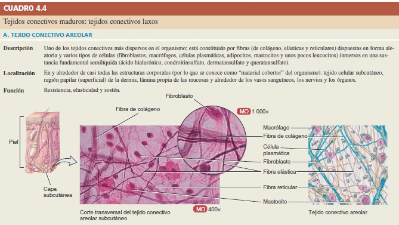
A · Areolar. El «material cobertor» del organismo: los tres tipos de fibra y casi todos los tipos celulares, en sustancia fundamental semilíquida. Está en el tejido subcutáneo, en la lámina propia de las mucosas —incluida la conjuntiva— y rodeando vasos, nervios y órganos.
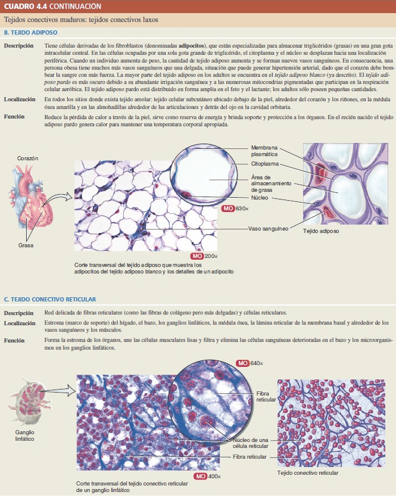
B · Adiposo y C · Reticular. El adiposo almacena triglicéridos en una gota que empuja núcleo y citoplasma a la periferia; reduce la pérdida de calor, guarda energía y amortigua órganos — es la grasa orbitaria que sostiene el globo ocular. El reticular forma el estroma del hígado, el bazo y los ganglios, y ahí filtra células sanguíneas gastadas y microorganismos.
| Tipo | Disposición de las fibras | Dónde está |
|---|---|---|
| Denso regular | Haces de colágeno paralelos, con fibroblastos entre ellos. Resiste la tracción en una dirección | Tendones, la mayoría de ligamentos, aponeurosis — y el estroma corneal |
| Denso irregular | Colágeno en todas las direcciones. Resiste tracción venga de donde venga | Dermis, fascias, cápsulas de los órganos — y la esclera |
| Elástico | Fibras elásticas ramificadas y fibroblastos | Paredes de las arterias grandes, tráquea, bronquios, pulmón |
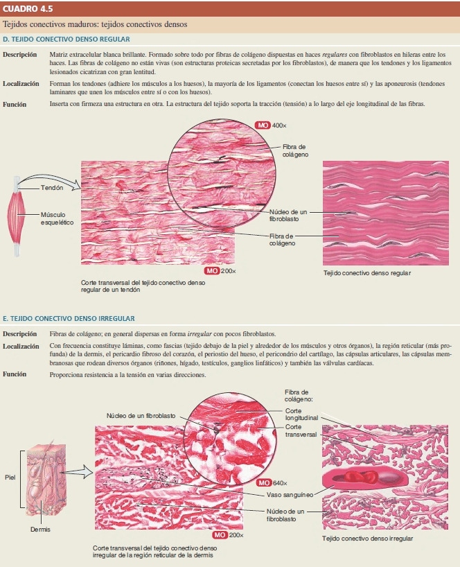
Cuadro 4.5 D y E · Denso regular y denso irregular. Arriba, el tendón: haces de colágeno paralelos con los fibroblastos en hilera entre ellos, que resisten la tracción a lo largo del eje. Abajo, la dermis: el mismo colágeno revuelto, que resiste venga de donde venga. Tortora advierte además que las fibras de colágeno no están vivas —son proteína secretada—, y por eso tendones y ligamentos cicatrizan con tanta lentitud.
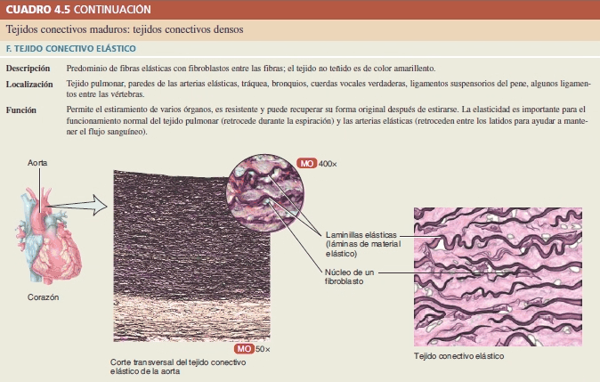
Cuadro 4.5 F · Elástico. Predominan las fibras elásticas; sin teñir, el tejido es amarillento. Permite que un órgano se estire y recupere su forma: el pulmón retrocede en la espiración y las arterias elásticas rebotan entre latidos para mantener el flujo.
Condrocitos alojados en lagunas, dentro de una matriz gomosa de condroitinsulfato. Es el gran excepcional del conectivo: no tiene vasos ni nervios, y por eso repara tan mal.
| Tipo | Rasgo | Dónde está |
|---|---|---|
| Hialino | Sustancia fundamental gelatinosa, blanco azulada. El más abundante. Con pericondrio | Esqueleto embrionario, extremos óseos, nariz, estructuras respiratorias |
| Fibrocartílago | Condrocitos entre haces visibles de colágeno. El más resistente. Sin pericondrio | Sínfisis del pubis, discos intervertebrales, meniscos de la rodilla |
| Elástico | Condrocitos en una red de fibras elásticas. Mantiene la forma. Con pericondrio | Epiglotis, trompa auditiva, pabellón auricular. El tarso palpebral es tejido denso, no cartílago, pese a su nombre clásico |
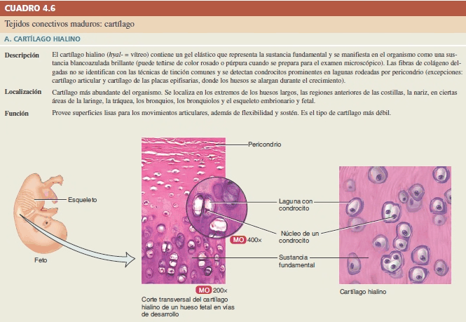
A · Hialino. El más abundante y el más débil. Matriz gelatinosa blanco azulada con fibras finas que no se ven con las tinciones habituales. Extremos de los huesos largos, costillas, nariz, laringe, tráquea y bronquios, y todo el esqueleto embrionario.
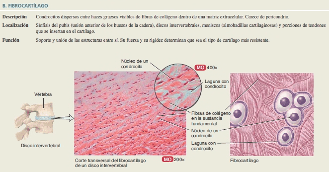
B · Fibrocartílago. Condrocitos entre haces visibles de colágeno. Es el más resistente de los tres y el único sin pericondrio. Sínfisis del pubis, discos intervertebrales y meniscos de la rodilla.
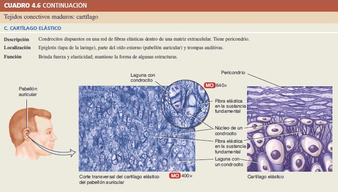
C · Elástico. Condrocitos en una red de fibras elásticas, con pericondrio. Da fuerza y elasticidad y mantiene la forma: epiglotis, pabellón auricular y trompas auditivas.
No es que los vasos «no lleguen». El cartílago secreta un factor antiangiogénico, una sustancia que inhibe activamente el crecimiento de vasos sanguíneos en su matriz. Es una decisión del tejido, no una carencia. De ahí que se esté estudiando ese factor como posible tratamiento contra el cáncer: un tumor que no consigue vascularizarse no crece.
La córnea hace exactamente lo mismo. Su transparencia depende de estar libre de vasos, y lo consigue produciendo factores antiangiogénicos que contrarrestan a los que inducen vasos. Cuando ese equilibrio se rompe —hipoxia por lentes de contacto de uso prolongado, inflamación crónica, insuficiencia de células madre limbares— aparece la neovascularización corneal: los vasos invaden el estroma y la córnea pierde transparencia. Es el mismo mecanismo que en el cartílago, con una consecuencia que verás en consulta.
Es un trastorno hereditario por un defecto en el gen de la fibrilina, una de las proteínas de las fibras elásticas. El resultado es que las fibras elásticas se desarrollan mal, y los tejidos que dependen de ellas quedan débiles o malformados.
Tortora nombra tres estructuras afectadas con más frecuencia, y una de ellas es ocular: el periostio, las paredes de las grandes arterias y el ligamento que suspende el cristalino, es decir, la zónula. Cuando esa zónula falla, el cristalino se desplaza —ectopia lentis, característicamente hacia arriba y afuera—, y es uno de los signos que hace sospechar el síndrome. Las personas con Marfan tienden además a ser altas y con extremidades largas.
Por qué te importa como optómetra: puedes ser quien lo detecte primero. Un cristalino subluxado en un paciente joven y alto obliga a descartar Marfan — y lo que está en juego no es la refracción, sino un aneurisma de aorta.
Condroitinsulfato y glucosamina. Son componentes reales de la sustancia fundamental del cartílago, y por eso se usan como suplementos para intentar mantener la estructura del cartílago articular y reducir el dolor. Aquí lo interesante es el razonamiento: se administra el material de la matriz con la esperanza de que el tejido lo aproveche.
Liposucción. Aspiración de tejido adiposo a través de una cánula conectada a una unidad de vacío, tras una incisión en la piel. Se usa para remodelar el contorno corporal.
Ingeniería de tejidos. Combina material sintético con células vivas para fabricar tejido de reemplazo. Ya se aplica en piel y cartílago, y es la línea de la que dependen los sustitutos corneales que se investigan hoy.
Matriz de sales minerales y fibras de colágeno —lo primero da dureza, lo segundo evita que sea quebradizo— con osteocitos alojados en lagunas. Se presenta de dos formas: el compacto, organizado en osteonas o sistemas de Havers —laminillas concéntricas, lagunas, osteocitos, canalículos y un conducto central—, y el esponjoso, formado por columnas delgadas llamadas trabéculas con médula ósea roja entre ellas. Sostiene, protege, almacena minerales, aloja la médula y sirve de palanca para los músculos. Las siete paredes óseas de la órbita son este tejido.
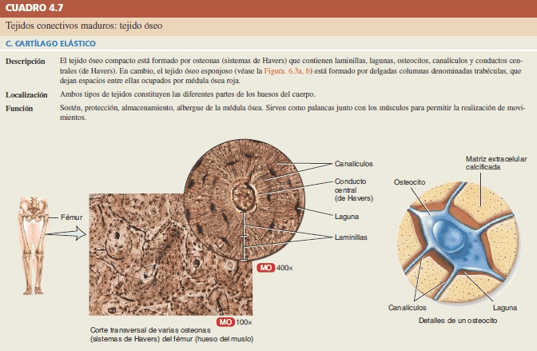
Cuadro 4.7 · Tejido óseo. Busca los canalículos: son los túneles por los que los osteocitos, atrapados en matriz mineralizada, se comunican y se nutren mediante uniones comunicantes. Es el mismo problema del cristalino resuelto de la misma manera.
Sorprende que la sangre sea conectivo hasta que se aplica la regla: pocas células y mucha matriz — solo que aquí la matriz es líquida.
Plasma como matriz y elementos formes como células: eritrocitos que transportan gases, leucocitos que defienden y plaquetas que coagulan.
El líquido extracelular que circula por los vasos linfáticos. Parecido al plasma, pero con menos proteínas.
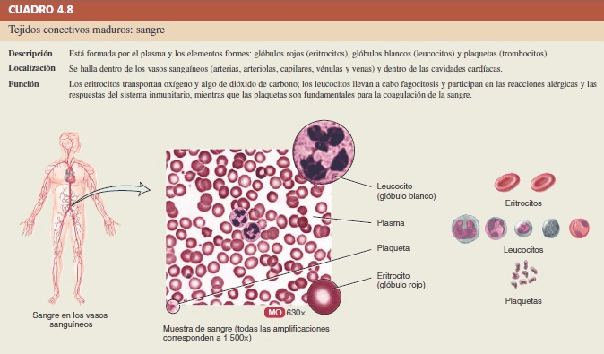
Cuadro 4.8 · Sangre. Los eritrocitos transportan oxígeno y algo de dióxido de carbono; los leucocitos fagocitan y participan en las reacciones alérgicas y la inmunidad; las plaquetas son esenciales para la coagulación. La matriz —el plasma— es líquida, y por eso cuesta reconocerla como tejido conectivo.
El estroma es el 90 % del espesor de la córnea y es tejido conectivo denso regular, pero con una precisión que no tiene ningún tendón: unas 200 a 250 laminillas de colágeno tipo I, cada una con las fibrillas paralelas entre sí y girada respecto a la siguiente, todas del mismo diámetro y con la misma separación, menor que la longitud de onda de la luz. Los queratocitos —los fibroblastos del estroma— mantienen ese orden. Cuando una herida llega al estroma, los queratocitos se activan y depositan colágeno desordenado: eso es una cicatriz, y en la córnea una cicatriz se llama leucoma y se ve.
Una membrana epitelial es la combinación de una capa de epitelio sobre una capa de tejido conectivo. Es el primer ejemplo de cómo dos tejidos se asocian para formar algo con función propia — el paso siguiente hacia el órgano.
| Membrana | De qué está hecha | Dónde |
|---|---|---|
| Mucosa | Epitelio + lámina propia de conectivo areolar | Reviste cavidades que se abren al exterior: tubo digestivo, vías respiratorias, urinarias. La conjuntiva es una mucosa |
| Serosa | Mesotelio + conectivo areolar. Dos láminas: parietal (pared) y visceral (órgano) | Reviste cavidades cerradas: pleura, pericardio, peritoneo. Secreta líquido seroso que reduce la fricción |
| Cutánea | Epidermis (epitelio) + dermis (conectivo) | Es la piel. Cubre todo el cuerpo |
| Sinovial | Conectivo areolar y adiposo. No tiene epitelio — por eso no es una membrana epitelial | Tapiza las cavidades articulares; secreta líquido sinovial |
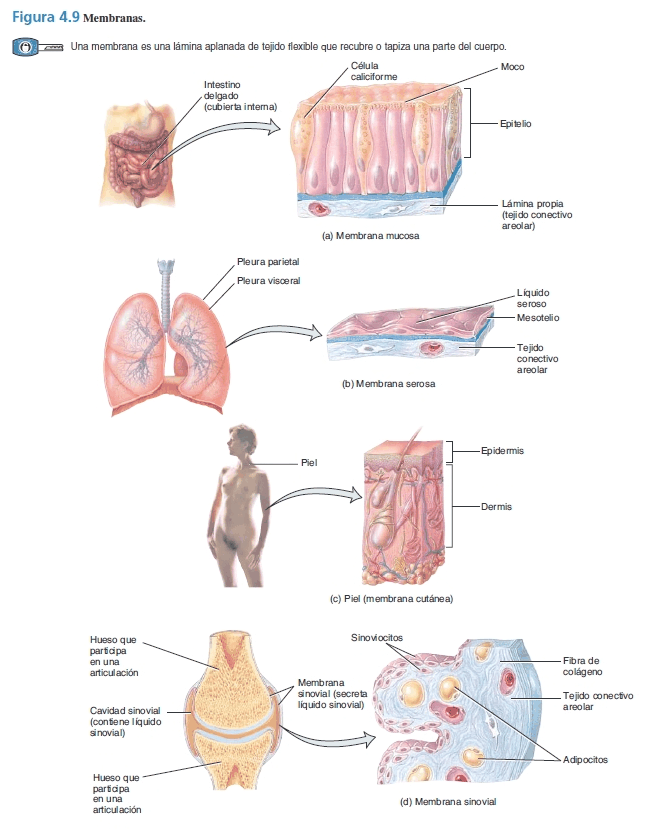
Figura 4.9 · Las membranas del cuerpo. Fíjate en la serosa: una sola membrana que se pliega sobre sí misma, de modo que la lámina parietal tapiza la pared de la cavidad y la visceral envuelve el órgano. Entre las dos queda una película de líquido seroso que hace de lubricante — por eso el corazón late y el pulmón se expande sin rozar.
Que la conjuntiva sea una membrana mucosa —epitelio con células caliciformes sobre una lámina propia de conectivo areolar vascularizado— explica casi todo lo que verás en ella. Tiene vasos, así que se enrojece cuando se inflama, y son vasos que se pueden blanquear con vasoconstrictores. Tiene caliciformes, así que produce mucina y su pérdida causa ojo seco. Tiene tejido linfoide en la lámina propia, así que monta respuestas alérgicas —las papilas de la conjuntivitis alérgica—. Y como toda mucosa, está en contacto con el exterior: es una puerta de entrada.
Células alargadas llamadas fibras musculares o miocitos, especializadas en contraerse. Producen movimiento, mantienen la postura y generan calor. Son tres tipos, y se distinguen por tres preguntas: ¿tiene estrías?, ¿cuántos núcleos?, ¿obedece a la voluntad?
| Esquelético | Cardíaco | Liso | |
|---|---|---|---|
| Estriado | Sí | Sí | No |
| Núcleos | Muchos, periféricos | Uno o dos, centrales | Uno, central |
| Control | Voluntario | Involuntario | Involuntario |
| Rasgo propio | Fibras largas y cilíndricas, insertadas en hueso | Fibras ramificadas unidas por discos intercalares con uniones comunicantes, que sincronizan el latido | Fibras fusiformes, en las paredes de órganos huecos |
| En el ojo | Los seis músculos extraoculares y el elevador del párpado superior. También el orbicular | — | Músculo ciliar (acomodación), esfínter y dilatador del iris, músculo de Müller |
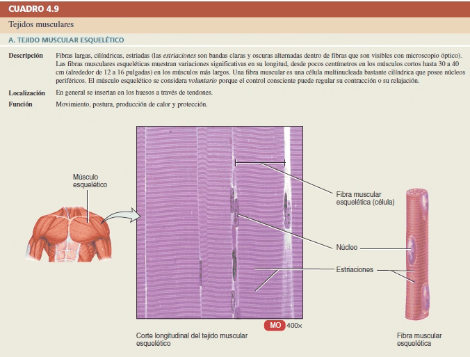
Cuadro 4.9 · Los tres tejidos musculares. Tres cosas que mirar en la microfotografía: si hay estrías transversales, dónde están los núcleos y si se ven discos intercalares. Con esas tres preguntas se identifican sin dudar.
Mueves los ojos con músculo esquelético —los seis extraoculares, estriados y voluntarios, de los más rápidos y precisos del cuerpo—. Enfocas con músculo liso: el músculo ciliar, que al contraerse relaja la zónula y deja que el cristalino abombe. Por eso puedes decidir hacia dónde miras pero no a qué distancia enfocas: son dos tejidos distintos con dos inervaciones distintas. El ciliar responde al parasimpático, y por eso un colirio ciclopléjico —que lo bloquea— paraliza la acomodación.
El cuarto tejido tiene solo dos clases de célula:
Convierten estímulos en una señal eléctrica —el potencial de acción— y la conducen hasta otra célula. La mayoría tiene cuerpo celular, dendritas que reciben y un axón que transmite.
Células de soporte y protección. No conducen impulsos, pero sin ellas las neuronas no funcionan: las nutren, las aíslan y limpian el entorno.
La excitabilidad eléctrica es la capacidad de responder a un estímulo generando potenciales de acción. Solo dos tipos de célula del cuerpo la tienen, y por eso se llaman células excitables: las neuronas y las fibras musculares. Es lo que conecta los dos tejidos que acabamos de ver.
Conviene decirlo con precisión: la retina no es una película fotográfica ni un sensor pegado al fondo del ojo. Es tejido nervioso —parte del sistema nervioso central, derivada del diencéfalo— con sus neuronas y su neuroglía propia.
De ahí se sigue algo importante: como es sistema nervioso central, no se regenera. Una neurona ganglionar perdida en un glaucoma no vuelve. Por eso el daño glaucomatoso es irreversible y todo el tratamiento va dirigido a evitar la pérdida siguiente, no a recuperar la anterior.
La reparación tisular es el reemplazo de células deterioradas, dañadas o muertas. De qué modo ocurra depende de dos cosas: si el tejido conserva células madre capaces de dividirse, y qué tan profunda sea la lesión.
Si la herida es superficial, las células propias del tejido —el parénquima— se dividen y lo reconstruyen igual que estaba. No queda cicatriz.
Si el daño es extenso, se forma tejido de granulación y los fibroblastos depositan colágeno desordenado. Se repara la brecha, pero con cicatriz y sin recuperar la función original.
La capacidad de regenerar no es la misma en los cuatro tejidos: el epitelial se renueva muy bien, el conectivo bastante, el muscular poco y el nervioso, en el sistema nervioso central, prácticamente nada. Y en todos los casos la buena nutrición y la irrigación son determinantes.
Detrás de esos dos desenlaces hay una sola pregunta, y conviene nombrarla bien porque es el concepto que organiza todo el apartado. Cualquier órgano tiene dos partes:
Las células que hacen el trabajo propio del órgano: las del epitelio corneal, las neuronas de la retina, los hepatocitos del hígado.
El tejido conectivo de sostén, con sus fibroblastos, que le da estructura y lo irriga.
Si la reparación la llevan a cabo las células parenquimatosas, hay regeneración y la reconstrucción puede ser casi perfecta. Si en cambio quienes se activan son los fibroblastos del estroma, estos sintetizan colágeno y el tejido dañado queda sustituido por tejido conectivo — es decir, por cicatriz. El resultado no depende de la gravedad de la herida, sino de qué población celular responde primero. En la córnea eso se traduce directamente: si responden las células madre limbares, no queda marca; si responden los queratocitos, queda leucoma.
El tejido cicatricial puede formar adherencias (adhaerentia = unirse a): uniones anormales entre tejidos que deberían quedar separados. Se forman sobre todo en el abdomen —donde se llaman bridas—, alrededor de un foco de inflamación como un apéndice inflamado, y con frecuencia después de una operación.
No siempre dan síntomas, pero pueden restar elasticidad al tejido, provocar una obstrucción intestinal o complicar una cirugía posterior. Es la otra cara de la reparación: el mismo mecanismo que cierra una herida puede, si se pasa, pegar dos estructuras que necesitaban deslizarse una sobre otra.
En el ojo ocurre lo mismo con otro nombre: el simbléfaron es la adherencia entre la conjuntiva palpebral y la bulbar tras una quemadura química o una inflamación grave, y limita el movimiento del globo exactamente igual que una brida limita el asa intestinal.
Los tejidos jóvenes curan más rápido y dejan menos cicatriz —de hecho, la cirugía fetal no deja cicatriz—. Con la edad cambian sobre todo los componentes extracelulares: el colágeno se entrecruza y pierde flexibilidad, y las fibras elásticas se degradan.
Ahora tiene respuesta exacta, y es la frontera entre dos tejidos:
Esa frontera explica una decisión quirúrgica real: la PRK retira el epitelio, que se regenera; las técnicas que tallan profundo trabajan sobre estroma, que no. Y explica el pterigión, la elastosis por radiación ultravioleta del conectivo subconjuntival, y el arco senil, el depósito lipídico periférico que aparece con la edad.
Sustancia fundamental más fibras que las células del conectivo secretan a su alrededor.
👁 Su orden en el estroma corneal es lo que hace transparente la córnea.
Célula más abundante del tejido conectivo; secreta las fibras y la sustancia fundamental.
👁 En la córnea se llaman queratocitos; al activarse producen el leucoma.
Componente de la matriz entre células y fibras; agua y glucosaminoglucanos.
👁 El vítreo es un gel de ácido hialurónico: sustancia fundamental casi pura.
Fibra proteica resistente a la tracción; la más abundante del organismo.
👁 Tipo I en el estroma corneal, en láminas de espaciado uniforme.
Haces de colágeno paralelos; resiste tracción en una dirección.
👁 El estroma corneal, con un orden mucho mayor que el de un tendón.
Colágeno dispuesto en todas las direcciones; resiste tracción multidireccional.
👁 La esclera: mismo colágeno que la córnea, desordenado y por eso opaco.
Condrocitos en lagunas dentro de matriz gelatinosa; sin vasos ni nervios, con pericondrio.
👁 Su avascularidad es la razón de que repare tan mal.
Epitelio sobre lámina propia que reviste cavidades abiertas al exterior.
👁 La conjuntiva: vascularizada, con caliciformes y tejido linfoide.
Mesotelio sobre conectivo que reviste cavidades cerradas; láminas parietal y visceral.
👁 Pleura, pericardio y peritoneo. La sinovial NO lleva epitelio.
Fibras fusiformes, un núcleo central, sin estrías, involuntario.
👁 Músculo ciliar y musculatura del iris: enfocan y regulan la pupila sin tu permiso.
Células de soporte y protección del tejido nervioso; no conducen impulsos.
👁 Las células de Müller atraviesan toda la retina.
Capacidad de generar potenciales de acción ante un estímulo; solo neuronas y fibras musculares.
👁 Es lo que registra un electrorretinograma.
1. La córnea y la esclera están formadas por tejido conectivo denso con colágeno tipo I. ¿Qué explica que una sea transparente y la otra opaca?
2. ¿Cuál de estas membranas no es una membrana epitelial?
3. Un paciente sufre una abrasión corneal que respeta el estroma. ¿Qué se espera y por qué?
4. Los seis músculos extraoculares y el músculo ciliar se diferencian en que:
5. Retinal ganglion cells lost in glaucoma are never replaced. Which property of nervous tissue best explains this?
Las células ganglionares de la retina que se pierden en el glaucoma no se reemplazan nunca. ¿Qué propiedad del tejido nervioso lo explica mejor?
Recupera la respuesta que diste al empezar la mañana y compárala. No importa si te equivocaste: importa que ahora puedas decir por qué.
| La pregunta | Lo que ahora sabes |
|---|---|
| 1 · Córnea y esclera, mismo material, distinto aspecto | Conectivo denso regular frente a irregular. En el conectivo manda el orden de la matriz, no la célula |
| 2 · Heridas que desaparecen y heridas que no | Regeneración parenquimatosa desde las células madre limbares si es epitelial; fibrosis si llega al estroma |
| 3 · Un músculo que obedece y otro que no | Esquelético estriado voluntario en los extraoculares; liso involuntario en el ciliar |
| 4 · Un tejido sin sangre | El epitelio es avascular por definición y se nutre por difusión. En la córnea, además, no tener vasos es requisito de la transparencia |
Cierra la clase leyendo una sola estructura con todo lo de hoy:
Figura 4.4 · Dos tejidos, cinco capas y tres destinos distintos ante una herida. Toda la clase de hoy cabe en este esquema.
Todo lo de hoy se resume en una frase que te servirá el resto de la carrera: la función de un tejido está en su arquitectura, no en su lista de ingredientes. Córnea y esclera tienen los mismos ingredientes. La diferencia —ver o no ver— está en cómo están puestos.